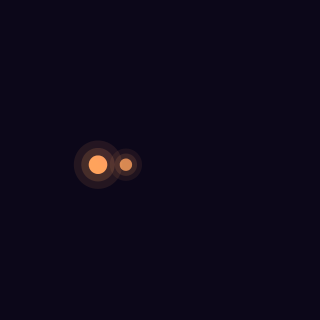
The Linux desktop
developers deserve.
Aurora OS is a beautiful, macOS‑inspired desktop on the rock‑solid Debian base, with your tools ready on day one. Free, open source, and yours to shape.
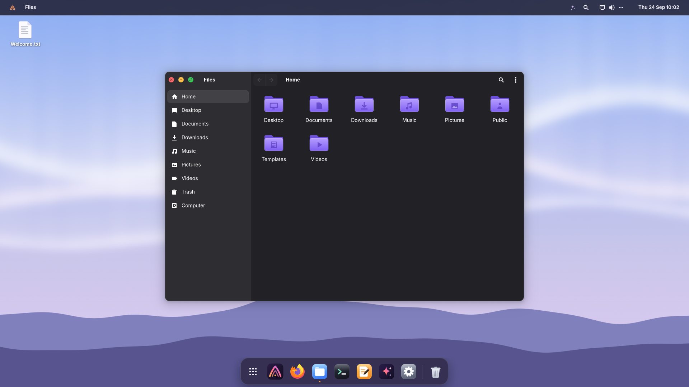
Beautiful by default
Everything where your hands expect it.
A menu bar on top, a dock at the bottom, and one key to find anything. Aurora's desktop is written from scratch and designed down to the last pixel.
Spotlight, for everything
Tap Super and start typing. Apps, settings, recent files, your git projects,
a calculator, terminal commands (> htop) and web search all live in one box.
Enter opens the top result.
- Finds settings by what they do: type “wifi”, “dark”, “keyboard”
- Math and conversions as you type:
12*(3+4),10 km in mi,100 usd in eur - Emoji with
:rocket, and your clipboard history with Super+V - Everything runs on your computer. Only currency rates are fetched, from the European Central Bank.
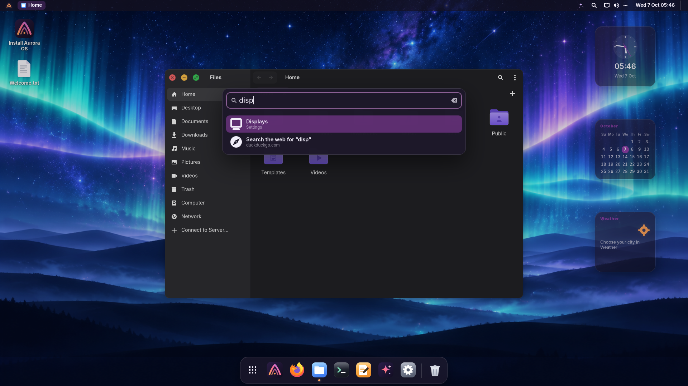
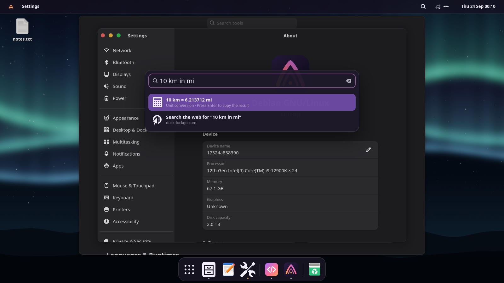
Quick Look
Select a file and press Space. Photos, videos, PDFs and source code open instantly in a preview, with syntax highlighting for code. The arrow keys move to the next file, and Space closes the preview.
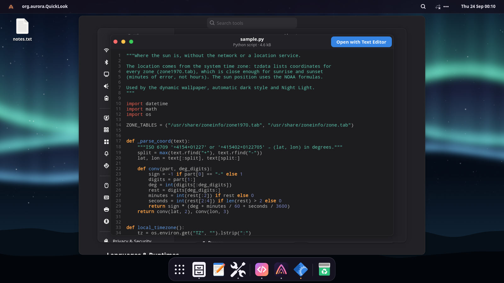
All your windows at a glance
Press Super+W, or push the pointer into the bottom-left corner, and every open window lays out in front of you. Type to filter, click to jump. The bottom-right corner shows the desktop. Pick what each corner does in Settings.
- Snap windows to halves, quarters and thirds from the keyboard
- Or hold Super while dragging and drop them into place
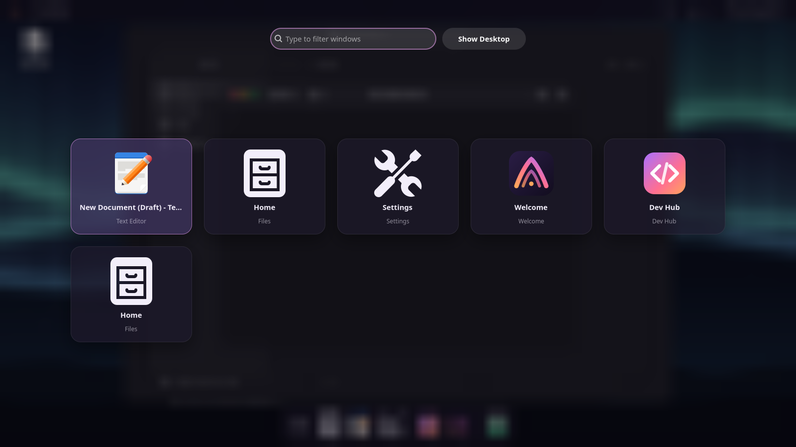
A desktop that follows the sun
The Aurora landscape changes with the time of day, from dawn to a starry night, and fades gently from one to the next. Set the style to Auto and Aurora goes dark at sunset and light again at sunrise. Night Light warms the screen in the evening.
- Sunrise and sunset come from your time zone, no location service involved
- The login and lock screens follow along
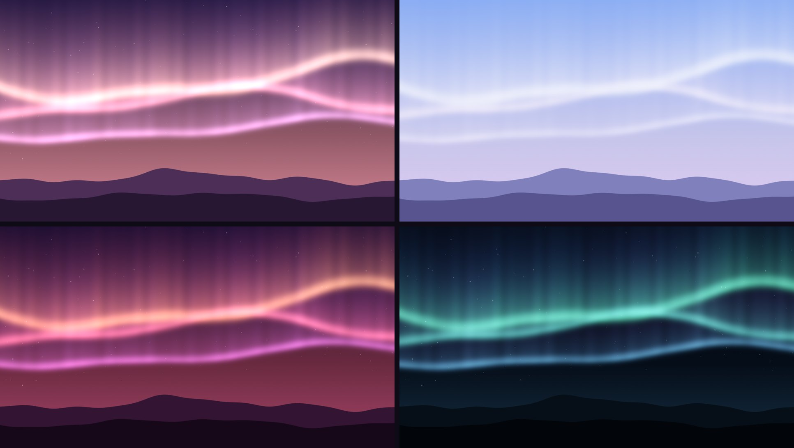
A dock you'll want to touch
Pinned and running apps, a smooth magnification effect, Launchpad and the Trash. Right-click an icon for its windows and quick actions, or drag the pointer across it and watch it breathe.
- Launchpad shows every app in a full-screen grid
- Put it at the bottom or on either side, floating or full width
- Auto-hide, icon size and magnification are yours to set
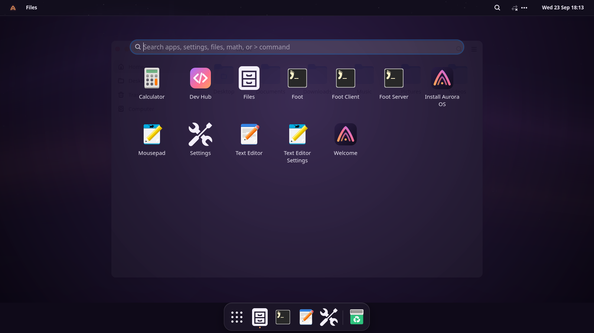
Control Center
Everything you reach for, one click away: volume and output device, microphone, brightness, Wi-Fi and Bluetooth with their device lists, power mode, night light, dark style, Do Not Disturb, airplane mode, screen recording and media controls.
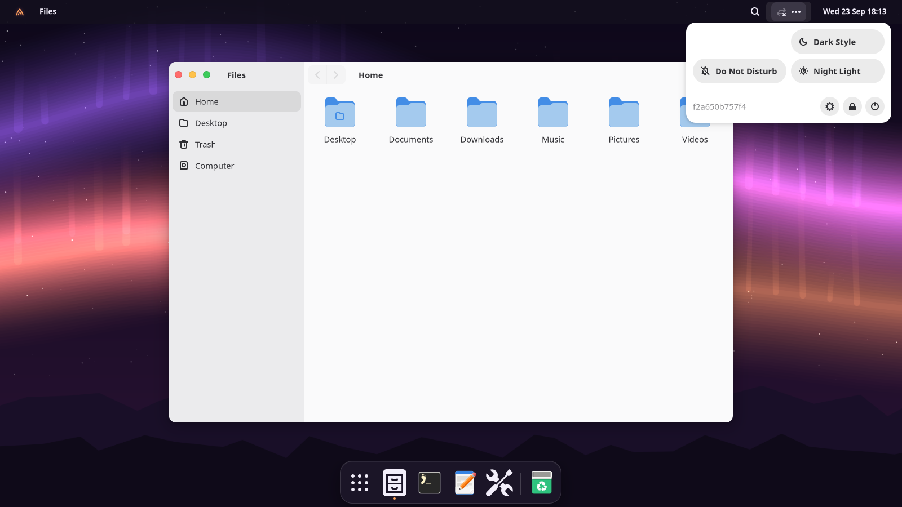
Aurora AI
A private assistant, built in.
Ask from Spotlight with ?, fix and rewrite any text with Writing Tools, get the
right command in the terminal with ask, dictate, have text read aloud, and find
documents by what they're about. It runs on your computer, or with Claude or another
service if you prefer. Off until you turn it on.
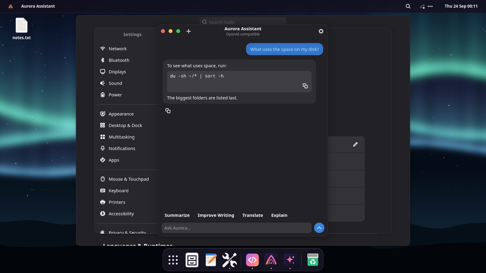
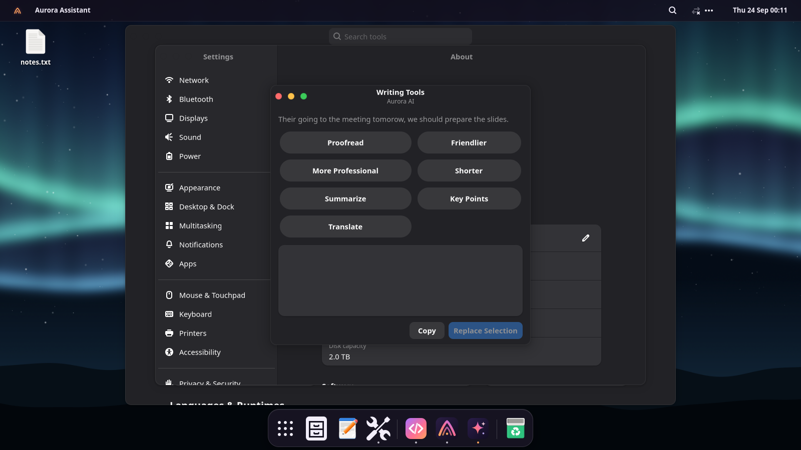
Make it yours
Four layouts. One click. Endless tweaks.
Start from a preset, then change anything: bar and dock position, icon size, window buttons, corner radius, fonts, pointer, icons and accent color.
Menu bar on top, a floating dock with magnification, round colored window buttons.
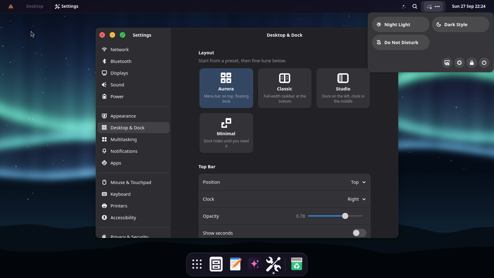
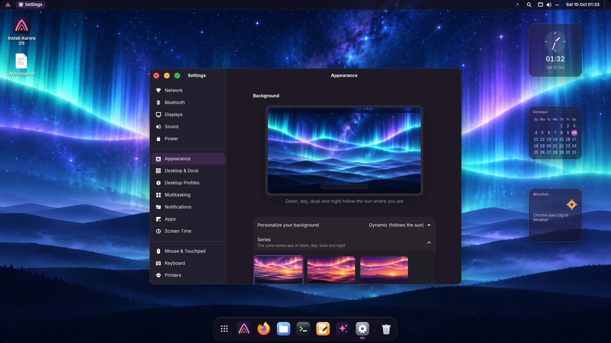
Built for developers
Open the terminal. Start working.
No afternoon of setup. The essentials are already installed and configured, and heavier toolchains are one click away, always at their latest version. More for developers, and Game Hub →
~/code/api main py 3.13 ❯ git pull && docker compose up -d ✔ Container api-db-1 Started ✔ Container api-web-1 Started ~/code/api main took 3s ❯ portop PORT PROTO PROCESS SERVICE / CONTAINER 5432 tcp postgres api-db-1 8000 tcp uvicorn api-web-1 3000 tcp node — [k] kill [o] open [f] filter [,] settings
Preinstalled and configured
Ptyxis, the terminal, has tabs, profiles and one-click shells inside your distrobox, toolbox and podman containers. Add an informative prompt (git status, language versions, command duration), Ctrl+R fuzzy history and sensible aliases. Docker starts on first use, so it costs nothing at boot.
portop shows what's using every port (process, systemd service or Docker container) and stops it with one key.
Dev Hub: your toolbox in one click
VS Code, VSCodium, Zed, IntelliJ, PyCharm, Android Studio, Rust, Go, Java, uv, Bun, Deno, GitHub CLI, kubectl, Terraform, AWS CLI, PostgreSQL, MariaDB, Redis, MongoDB, DBeaver and Postman. Each one installs from its official source, so you always get the newest release, and you see every step in a terminal.
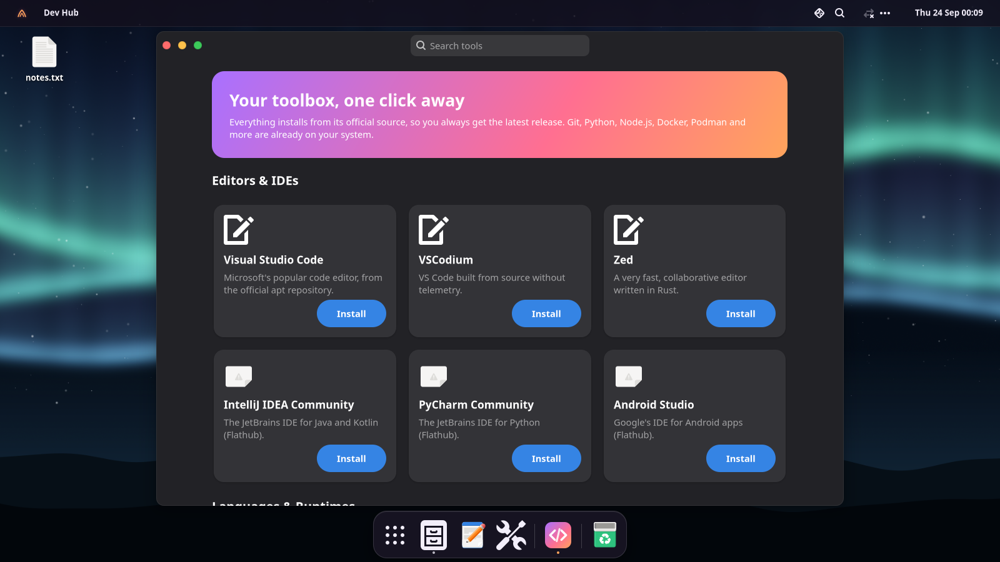
Ready to use
Everything you need, nothing you don't.
Aurora comes with the everyday apps you'd expect from a complete desktop, and App Center opens the whole Debian archive and Flathub when you want more.
🌐 Internet
Firefox · Mail (Geary) · Transmission · Remmina remote desktop
📄 Office
LibreOffice Writer, Calc, Impress · Document viewer · Text editor · Scanner
🗓️ Personal
Calendar · Contacts · Weather · Maps · Clocks · Calculator
🎵 Media
Music · Videos with codecs · Image viewer · Camera · Sound recorder · Screen recording
🛠️ System
Files · Settings · Terminal · App Center · Disks · Backups · Snapshots · System monitor · Logs
🎮 Games
Solitaire · Mines · Sudoku · Mahjongg
🎨 One look everywhere
GTK 4, GTK 3 and Qt apps, window borders and icons all follow your light or dark style and accent color, instantly.
🔔 It tells you what matters
Updates ready, battery low, a USB drive plugged in (mounted for you), a screen recording saved. Tray icons for your chat and sync apps are there too.
🔐 A lock screen you'll like
A big clock over your wallpaper, a clean password field, and automatic locking when you step away.
🔒 Secure by default
Firewall on, automatic security updates, full-disk encryption in the installer, Secure Boot on installed UEFI systems, no telemetry.
💻 Runs on your hardware
Firmware for Intel, AMD, Realtek, Broadcom and MediaTek; Wi-Fi, Bluetooth, fingerprint readers, touchpads; guest tools for QEMU, VMware and Hyper-V.
⏪ Undo a bad update
Aurora takes a system snapshot before every update. If something breaks, pick Aurora OS snapshots in the boot menu and start yesterday's system. Your files are never touched.
📝 Text from any picture
Screenshots offer Annotate and Copy Text. Super+Shift+T copies the text inside any part of the screen, offline, in 18 languages.
📱 Your phone, connected
With KDE Connect your Android phone or iPhone shows its notifications on the desktop, and you can share files and the clipboard. It's one switch in Settings.
☁️ Weather and calendar
Click the clock for your calendar, notifications and today's weather with the next hours. No account needed.
👆 Fingerprint
Set up your finger in Settings → Users and use it instead of the password for sudo and admin prompts.
🎶 It sounds like Aurora
A warm marimba motif when you log in and a gentle goodbye when you shut down. Both are original, and one switch turns them off.
♻️ Safe to experiment
Backups with Déjà Dup, compressed RAM swap, and Flatpak apps that never touch the system.
Download
Get Aurora OS 0.1
Aurora OS 0.1 “dawn”
64-bit PC (x86-64) · about 2.5 GB · Try it live, then install
Download ISO SHA-256 checksumWhat you need
- 64-bit Intel or AMD processor
- 4 GB RAM (2 GB minimum)
- 20 GB of disk space to install
- A USB stick of 4 GB or more
Verify your download (recommended)
In the folder where you saved both files, run:
sha256sum -c aurora-os-0.1-amd64.iso.sha256On macOS use shasum -a 256 -c …; on Windows, certutil -hashfile aurora-os-0.1-amd64.iso SHA256 and compare.
Install guide
From download to desktop in five steps.
The full guide, with undoing updates, sharing and troubleshooting →
-
Write the ISO to a USB stick
Install balenaEtcher, choose the Aurora ISO, choose your USB stick and click Flash. (Rufus in DD mode and Ventoy work too.)
Use GNOME Disks → Restore Disk Image, or a terminal. Replace
sdXwith your stick. This erases it, so double-check the name withlsblk:sudo dd if=aurora-os-0.1-amd64.iso of=/dev/sdX bs=4M status=progress oflag=sync -
Boot from the stick
Restart and press the boot-menu key while the logo appears (usually F12, F10, F9, Esc or Del), then pick the USB stick. Both UEFI and legacy BIOS work. If your PC uses Secure Boot, switch it off to start the live USB; you can switch it back on after installing.
-
Try or Install
The Aurora menu offers Try Aurora OS (runs from the stick, touches nothing), Install Aurora OS (opens the installer right away) and a Language menu with 20 languages. From the live desktop you can install any time from the dock.
-
Follow the installer
Pick your language, your location on the map and your keyboard. Then choose how to use the disk: erase it, install alongside Windows or another Linux, or partition manually, with optional encryption. Finally create your user and choose whether to log in automatically. Keep the default btrfs file system to get automatic snapshots. Installation takes a few minutes and works offline.
-
Restart and enjoy
Remove the stick when asked. The Welcome app greets you on first login. Open Dev Hub to add your favorite tools, or App Center for everything else.
Under the hood
Every technical choice, explained.
Why Debian, why labwc, why Python and GTK 4, why Calamares, Ptyxis, PipeWire, gtklock… For every component we document what we picked, what else we considered and why, so you can trust (and challenge) how Aurora is built.
Read the technical overviewAt a glance
- Debian 13 · Linux 6.12 LTS · systemd
- Wayland · labwc (wlroots)
- Python 3 · GTK 4 · libadwaita
- PipeWire · NetworkManager · BlueZ
- Calamares · GRUB · Plymouth
- Flatpak + apt · ufw · unattended-upgrades
- btrfs · Timeshift · grub-btrfs
FAQ
Questions, answered.
Is Aurora OS free?
Yes, free as in beer and as in freedom. Aurora's own code is GPL-3.0-or-later, and everything else is open source from Debian and upstream projects.
Is it based on Ubuntu?
No, on Debian 13 "trixie", the same base Ubuntu itself comes from. You get Debian's packages and security updates, with no snaps. Almost every guide for Debian or Ubuntu applies.
How do updates work?
Security updates install automatically in the background, and App Center shows the rest. The kernel is the 6.12 long-term release with regular fixes. Newer kernels for brand-new hardware are available from Debian backports.
Can I install apps from Flathub, or .deb files?
Both. Flathub is enabled in App Center out of the box, and you can install any Debian package
or a vendor's .deb with a double-click or apt.
What if an update breaks something?
Restart and choose Aurora OS snapshots in the boot menu. You'll find a snapshot from right before every update. Start it, check that all is well, then make it permanent with one click in Timeshift. This needs the btrfs file system, which is the installer's default.
Does Aurora send any data anywhere?
No telemetry, ever. The only requests the desktop makes on its own are the weather in the calendar (only your time zone's main city is sent, and it can be turned off), today's exchange rates when you type a currency conversion, and update checks with Debian's mirrors.
Will it run next to Windows?
Yes. Choose Install alongside in the installer and drag the divider to share the disk. A boot menu lets you pick the system at startup.
What about NVIDIA graphics?
The open-source driver works out of the box. For NVIDIA's own driver, install
nvidia-driver from App Center or apt; Aurora ships the
nvidia-detect tool to tell you which one fits your card.
Why must Secure Boot be off to start the USB?
The live USB's boot loader isn't signed yet. Once installed, Aurora on UEFI uses Debian's signed boot chain, so you can turn Secure Boot back on. A signed live USB is on the roadmap.
Does it look like a Mac? Is that allowed?
Aurora is inspired by macOS's layout. Every icon, font, wallpaper and line of code is our own or comes from open-source projects. Aurora isn't affiliated with Apple.